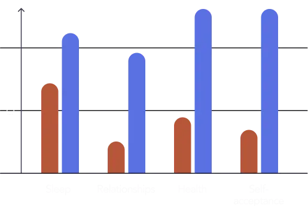

<!DOCTYPE html>
<html lang="en">
<head>
  <meta charset="UTF-8">
  <meta name="viewport" content="width=device-width, initial-scale=1, viewport-fit=cover">
  <title>Childhood Trauma Test (ACES Test) – Discover the Impact & Begin Healing</title>
  <link rel="icon" href="favicon.ico">
  <link rel="preconnect" href="https://fonts.googleapis.com">
  <link rel="preconnect" href="https://fonts.gstatic.com" crossorigin>
  <link href="https://fonts.googleapis.com/css2?family=Poppins:wght@400;500;600;700;800&display=swap" rel="stylesheet">
  <style>
    :root {
      --bg: #0F1018;
      --accent: #5ACFB3;
      --card: #191C2D;
      --progress-bg: #252535;
      --text: #FAFAFA;
      --text-muted: #8E92AF;
      --btn-bg: #252535;
      --btn-hover: #2E3048;
      --btn-selected-bg: rgba(90,207,179,0.12);
      --btn-selected-border: #5ACFB3;
    }

    *, *::before, *::after { box-sizing: border-box; margin: 0; padding: 0; }

    body {
      background: var(--bg) url('assets/bg_audio.ec4a8525.webp') center 0 / 100% auto no-repeat;
      min-height: 100vh;
      font-family: 'Poppins', -apple-system, BlinkMacSystemFont, sans-serif;
      color: var(--text);
      -webkit-font-smoothing: antialiased;
      overflow-x: hidden;
    }

    #app {
      max-width: 450px;
      margin: 0 auto;
      min-height: 100vh;
      display: flex;
      flex-direction: column;
      padding: 0 16px 60px;
    }

    /* ── TRANSITIONS */
    .screen { animation: fadeIn 0.22s ease; }
    @keyframes fadeIn {
      from { opacity: 0; transform: translateY(10px); }
      to   { opacity: 1; transform: translateY(0); }
    }

    /* ── HEADER */
    .quiz-header {
      display: flex;
      justify-content: center;
      padding: 20px 0 0;
    }
    .logo-text {
      font-size: 17px;
      font-weight: 800;
      letter-spacing: 0.5px;
      color: var(--accent);
    }

    /* ── PROGRESS BAR */
    .progress-wrap {
      width: 85%;
      max-width: 333px;
      margin: 40px auto 0;
    }
    .progress-track {
      position: relative;
      display: flex;
      width: 100%;
      height: 3px;
      background: var(--progress-bg);
      border-radius: 3px;
      align-items: center;
    }
    .p-section {
      position: relative;
      flex: 1;
      height: 3px;
    }
    .p-fill {
      position: absolute;
      top: 0; left: 0;
      height: 3px;
      background: var(--accent);
      border-radius: 3px;
      transition: width 0.35s ease;
    }
    .p-circle {
      position: absolute;
      right: -9px;
      top: 50%;
      transform: translateY(-50%);
      width: 18px; height: 18px;
      border-radius: 50%;
      display: flex; align-items: center; justify-content: center;
      font-size: 10px; font-weight: 700;
      z-index: 2;
      transition: background 0.3s;
    }
    .p-circle.done   { background: var(--accent); color: #0F1018; }
    .p-circle.active { background: var(--accent); color: #0F1018; width: 20px; height: 20px; right: -10px; }
    .p-circle.next   { background: var(--progress-bg); color: var(--text-muted); border: 1.5px solid rgba(255,255,255,0.15); }
    .p-label {
      position: absolute;
      top: -22px;
      left: 50%;
      transform: translateX(-50%);
      white-space: nowrap;
      font-size: 11px;
      font-weight: 600;
      color: var(--accent);
    }

    /* ── BACK BUTTON */
    .back-btn {
      background: none; border: none;
      color: var(--text-muted);
      font-family: inherit; font-size: 14px;
      cursor: pointer;
      padding: 10px 0 0;
      display: flex; align-items: center; gap: 5px;
      align-self: flex-start;
    }
    .back-btn:hover { color: var(--text); }

    /* ── PRE-QUIZ SCREENS */
    .prescreen {
      display: flex;
      flex-direction: column;
      align-items: center;
      padding: 56px 0 32px;
      gap: 24px;
    }
    .prescreen-title {
      font-size: 26px; font-weight: 700;
      line-height: 32px; letter-spacing: -0.5px;
      text-align: center;
    }

    /* ── GENDER GRID */
    .gender-grid {
      display: grid;
      grid-template-columns: 1fr 1fr;
      gap: 12px;
      width: 100%;
    }
    .gender-btn {
      background: var(--btn-bg);
      border: 1.5px solid rgba(255,255,255,0.08);
      border-radius: 14px;
      color: var(--text);
      font-family: inherit; font-size: 16px; font-weight: 500;
      padding: 20px 12px;
      cursor: pointer;
      transition: border-color 0.15s, background 0.15s;
      text-align: center;
    }
    .gender-btn:hover { background: var(--btn-hover); }
    .gender-btn.selected {
      background: var(--btn-selected-bg);
      border-color: var(--btn-selected-border);
      color: var(--accent);
    }

    /* ── AGE GRID */
    .age-grid {
      display: grid;
      grid-template-columns: 1fr 1fr;
      gap: 12px 8px;
      width: 100%;
    }
    .age-btn {
      background: var(--btn-bg);
      border: 1.5px solid rgba(255,255,255,0.08);
      border-radius: 14px;
      color: var(--text);
      font-family: inherit; font-size: 16px; font-weight: 500;
      padding: 17px 12px;
      cursor: pointer;
      transition: border-color 0.15s, background 0.15s;
    }
    .age-btn:hover { background: var(--btn-hover); }
    .age-btn.selected {
      background: var(--btn-selected-bg);
      border-color: var(--btn-selected-border);
      color: var(--accent);
    }

    /* ── QUIZ QUESTION */
    .question-area {
      display: flex;
      flex-direction: column;
      align-items: center;
      padding: 24px 0 16px;
      gap: 20px;
      width: 100%;
    }
    .question-text {
      font-size: 22px; font-weight: 700;
      line-height: 28px; letter-spacing: -0.4px;
      text-align: center;
      width: 100%;
    }
    .question-image {
      width: 100%; max-width: 320px;
      border-radius: 18px;
      object-fit: cover;
      max-height: 210px;
    }
    .answers {
      display: flex;
      flex-direction: column;
      gap: 10px;
      width: 100%;
    }
    .answer-btn {
      background: var(--btn-bg);
      border: 1.5px solid rgba(255,255,255,0.08);
      border-radius: 14px;
      color: var(--text);
      font-family: inherit; font-size: 16px; font-weight: 500;
      line-height: 22px;
      padding: 16px 20px;
      cursor: pointer;
      text-align: left;
      transition: border-color 0.15s, background 0.15s, transform 0.1s;
      width: 100%;
    }
    .answer-btn:hover { background: var(--btn-hover); transform: translateY(-1px); }
    .answer-btn:active { transform: translateY(0); }

    /* ── LOADING */
    .loading-screen {
      display: flex;
      flex-direction: column;
      align-items: center;
      justify-content: center;
      min-height: 100vh;
      gap: 28px;
      padding: 20px;
      text-align: center;
    }
    .loading-title  { font-size: 24px; font-weight: 700; letter-spacing: -0.4px; }
    .loading-sub    { font-size: 14px; color: var(--text-muted); line-height: 22px; max-width: 280px; }
    .loading-bar-wrap {
      width: 100%; max-width: 280px;
      height: 6px; background: var(--progress-bg);
      border-radius: 6px; overflow: hidden;
    }
    .loading-bar {
      height: 6px; background: var(--accent);
      border-radius: 6px; width: 0%;
      animation: loadProg 3.4s ease forwards;
    }
    @keyframes loadProg { from { width: 0%; } to { width: 100%; } }
    .loading-steps { display: flex; flex-direction: column; gap: 14px; width: 100%; max-width: 280px; text-align: left; }
    .lstep {
      display: flex; align-items: center; gap: 10px;
      font-size: 14px; color: var(--text-muted);
      opacity: 0; transition: opacity 0.4s;
    }
    .lstep.on { opacity: 1; color: var(--text); }
    .lstep-dot {
      width: 8px; height: 8px; border-radius: 50%;
      background: var(--progress-bg); flex-shrink: 0;
      transition: background 0.3s;
    }
    .lstep.on .lstep-dot { background: var(--accent); }

    /* ── RESULTS */
    .results-screen {
      display: flex; flex-direction: column;
      align-items: center;
      padding: 40px 0 80px;
      gap: 26px; width: 100%;
    }
    .results-badge {
      background: rgba(90,207,179,0.12);
      border: 1px solid rgba(90,207,179,0.3);
      border-radius: 24px; padding: 6px 16px;
      font-size: 13px; font-weight: 600;
      color: var(--accent); letter-spacing: 0.3px;
    }
    .results-title {
      font-size: 26px; font-weight: 800;
      line-height: 32px; letter-spacing: -0.5px;
      text-align: center;
    }
    .results-sub {
      font-size: 14px; color: var(--text-muted);
      text-align: center; line-height: 20px;
    }
    .results-graph { width: 100%; border-radius: 18px; object-fit: cover; }
    .score-row     { display: flex; flex-direction: column; gap: 14px; width: 100%; }
    .score-item    { display: flex; flex-direction: column; gap: 6px; }
    .score-label-row { display: flex; justify-content: space-between; align-items: center; }
    .score-label   { font-size: 13px; font-weight: 600; color: var(--text-muted); }
    .score-val     { font-size: 13px; font-weight: 700; color: var(--accent); }
    .score-track   { width: 100%; height: 6px; background: var(--progress-bg); border-radius: 6px; overflow: hidden; }
    .score-fill    { height: 6px; background: var(--accent); border-radius: 6px; transition: width 1s ease; }
    .divider       { width: 100%; height: 1px; background: rgba(255,255,255,0.07); }
    .experts-section { display: flex; flex-direction: column; gap: 18px; width: 100%; }
    .experts-title {
      font-size: 12px; font-weight: 600; color: var(--text-muted);
      text-align: center; text-transform: uppercase; letter-spacing: 1px;
    }
    .experts-row { display: flex; gap: 14px; width: 100%; }
    .expert-card {
      flex: 1; background: var(--card);
      border-radius: 14px; padding: 14px;
      display: flex; flex-direction: column;
      align-items: center; gap: 8px;
    }
    .expert-img { width: 56px; height: 56px; border-radius: 50%; object-fit: cover; }
    .expert-name { font-size: 12px; font-weight: 700; text-align: center; }
    .expert-role { font-size: 11px; color: var(--text-muted); text-align: center; }
    .uni-row     { display: flex; justify-content: center; gap: 24px; align-items: center; }
    .uni-logo    { height: 26px; opacity: 0.65; object-fit: contain; }
    .cta-section { display: flex; flex-direction: column; align-items: center; gap: 12px; width: 100%; padding-top: 4px; }
    .cta-caption { font-size: 19px; font-weight: 700; text-align: center; line-height: 25px; }
    .cta-btn {
      display: block; width: 100%; max-width: 380px;
      background: var(--accent); color: #0F1018;
      border: none; border-radius: 18px;
      font-family: inherit; font-size: 17px; font-weight: 700;
      padding: 18px 24px; text-align: center;
      text-decoration: none; cursor: pointer;
      transition: opacity 0.15s, transform 0.1s;
      letter-spacing: -0.2px;
    }
    .cta-btn:hover { opacity: 0.9; transform: translateY(-1px); }
    .cta-note { font-size: 12px; color: var(--text-muted); text-align: center; }
  </style>
</head>
<body>
<div id="app"></div>

<script>
// ─── QUIZ DATA ─────────────────────────────────────────────────────────────

const SECTIONS = ['Your history', 'Tendencies', 'Struggles signs', 'Final Question'];

const QUESTIONS = [
  // ── Section 0: Your history
  {
    section: 0,
    text: 'In your childhood, your parents were...',
    image: null,
    answers: [
      { text: 'Happily married',        score: 0 },
      { text: 'Unhappily married',      score: 1 },
      { text: 'Divorced',               score: 2 },
      { text: 'I had only one parent',  score: 1 },
      { text: 'I had no parents',       score: 2 },
    ]
  },
  {
    section: 0,
    text: 'How can you describe the environment you were growing up in?',
    image: null,
    answers: [
      { text: 'Nurturing and supportive',       score: 0 },
      { text: 'Chaotic and unpredictable',      score: 2 },
      { text: 'Unstable and unsafe',            score: 2 },
      { text: 'Challenging and demanding',      score: 1 },
      { text: 'Economic hardship and scarcity', score: 1 },
      { text: 'Neglectful and lonely',          score: 2 },
    ]
  },
  {
    section: 0,
    text: 'Which memories from your childhood are prevalent?',
    image: 'assets/question_3_with_image.d615f347.webp',
    answers: [
      { text: 'Positive',                       score: 0 },
      { text: 'Negative',                       score: 2 },
      { text: "I don't remember my childhood",  score: 2 },
      { text: 'Not sure',                       score: 1 },
    ]
  },
  {
    section: 0,
    text: 'What situations trigger emotional reactions or flashbacks from your past?',
    image: null,
    answers: [
      { text: 'Those relating to any abuse',    score: 2 },
      { text: 'When my feelings are neglected', score: 2 },
      { text: 'When feeling helpless',          score: 2 },
      { text: 'When feeling trapped',           score: 2 },
      { text: 'Those related to loss',          score: 1 },
    ]
  },

  // ── Section 1: Tendencies
  {
    section: 1,
    text: 'Which situations can trigger strong emotional reactions that feel hard to control?',
    image: 'assets/question_5_with_image_male.fd0392b6.webp',
    answers: [
      { text: 'Abuse or mistreatment',  score: 2 },
      { text: 'Neglect or abandonment', score: 2 },
      { text: 'Other',                  score: 1 },
    ]
  },
  {
    section: 1,
    text: 'Have you ever felt depressed when growing up?',
    image: 'assets/question_6_with_image.670b1ff8.webp',
    answers: [
      { text: 'Yes',               score: 2 },
      { text: 'No',                score: 0 },
      { text: 'A couple of times', score: 1 },
    ]
  },
  {
    section: 1,
    text: 'Do you tend to cope with difficult emotions or memories by engaging in substance abuse, reckless driving, or the like?',
    image: null,
    answers: [
      { text: 'Yes',       score: 2 },
      { text: 'No',        score: 0 },
      { text: 'Sometimes', score: 1 },
    ]
  },
  {
    section: 1,
    text: 'How long have you been feeling this way?',
    image: null,
    answers: [
      { text: 'The last few weeks', score: 0 },
      { text: 'In recent months',   score: 1 },
      { text: 'A few years',        score: 2 },
      { text: 'My whole life',      score: 2 },
    ]
  },

  // ── Section 2: Struggles signs
  {
    section: 2,
    text: 'What do you see first?',
    image: 'assets/question_with_image_people_monster.04f02533.webp',
    answers: [
      { text: 'Two people',   score: 0 },
      { text: 'Monster face', score: 2 },
      { text: 'Two children', score: 1 },
    ]
  },
  {
    section: 2,
    text: 'In your relationships with others you often...',
    image: 'assets/question_11_with_image.a87c9d43.webp',
    answers: [
      { text: 'Keep the distance',                 score: 2 },
      { text: 'Easily open after knowing someone', score: 0 },
      { text: 'Try not to get attached',           score: 2 },
      { text: 'Attach too quickly',                score: 1 },
    ]
  },
  {
    section: 2,
    text: 'What do you feel when seeing some children receive what you lacked in childhood?',
    image: 'assets/question_9_with_image.52ef51b0.webp',
    answers: [
      { text: 'Sadness',                score: 2 },
      { text: 'Grief',                  score: 2 },
      { text: 'Anger',                  score: 2 },
      { text: 'Nothing in particular',  score: 0 },
      { text: "I didn't feel any lack", score: 0 },
    ]
  },
  {
    section: 2,
    text: 'Have you ever struggled with a fear of being judged or rejected by others?',
    image: null,
    answers: [
      { text: 'Yes',       score: 2 },
      { text: 'No',        score: 0 },
      { text: 'Sometimes', score: 1 },
    ]
  },

  // ── Section 3: Final Question
  {
    section: 3,
    text: 'What is your first emotion when looking at this?',
    image: 'assets/question_with_image_first_emotion.80c10396.webp',
    answers: [
      { text: 'Sadness',    score: 2 },
      { text: 'Fear',       score: 2 },
      { text: 'Anger',      score: 2 },
      { text: 'Compassion', score: 1 },
      { text: 'Happiness',  score: 0 },
      { text: 'Numbness',   score: 2 },
    ]
  },
  {
    section: 3,
    text: 'What do you expect to get out of healing your childhood trauma?',
    image: null,
    answers: [
      { text: 'Improve my love life',      score: 0 },
      { text: 'Enhance overall happiness', score: 0 },
      { text: 'Learn to express myself',   score: 0 },
      { text: 'Improve my career',         score: 0 },
      { text: 'Reconnect with my parents', score: 0 },
      { text: 'Learn to set boundaries',   score: 0 },
      { text: 'Accept myself as I am',     score: 0 },
    ]
  },
  {
    section: 3,
    text: 'How much time are you willing to dedicate to a personalized plan to heal your childhood trauma?',
    image: null,
    answers: [
      { text: '2 weeks',                 score: 0 },
      { text: '1 month',                 score: 0 },
      { text: '2–3 months',              score: 0 },
      { text: '6 months',                score: 0 },
      { text: "I don't want to heal it", score: 0 },
    ]
  },
];

const TOTAL_Q = QUESTIONS.length;

// ─── STATE ─────────────────────────────────────────────────────────────────

const state = {
  screen: 'gender',
  gender: null,
  age: null,
  currentQ: 0,
  scores: [],
};

// ─── HELPERS ───────────────────────────────────────────────────────────────

function totalScore() {
  return state.scores.reduce((s, v) => s + v, 0);
}

function maxScore() {
  return QUESTIONS.reduce((s, q) => s + Math.max(...q.answers.map(a => a.score)), 0);
}

function categoryScores() {
  const cats = [
    { label: 'Emotional Dysregulation',    qs: [3, 4, 7, 12] },
    { label: 'Identity Disturbance',       qs: [1, 2, 11] },
    { label: 'Impulsive Behaviours',       qs: [5, 6] },
    { label: 'Interpersonal Relationship', qs: [9, 10] },
  ];
  return cats.map(cat => {
    const catMax = cat.qs.reduce((s, i) => s + Math.max(...QUESTIONS[i].answers.map(a => a.score)), 0);
    const catScore = cat.qs.reduce((s, i) => s + (state.scores[i] || 0), 0);
    return { label: cat.label, pct: catMax > 0 ? Math.round((catScore / catMax) * 100) : 40 };
  });
}

function sectionProgress(sectionIdx) {
  const first = QUESTIONS.findIndex(q => q.section === sectionIdx);
  const count = QUESTIONS.filter(q => q.section === sectionIdx).length;
  const answered = Math.max(0, state.currentQ - first);
  return count > 0 ? Math.min(1, answered / count) : 0;
}

// ─── RENDER ────────────────────────────────────────────────────────────────

function render() {
  const app = document.getElementById('app');
  switch (state.screen) {
    case 'gender':  app.innerHTML = renderGender();  break;
    case 'age':     app.innerHTML = renderAge();     break;
    case 'quiz':    app.innerHTML = renderQuiz();    break;
    case 'loading': app.innerHTML = renderLoading(); startLoadingAnim(); break;
    case 'results': app.innerHTML = renderResults(); startScoreAnim();   break;
  }
}

function header() {
  return `<div class="quiz-header"><span class="logo-text">breeze</span></div>`;
}

function renderGender() {
  return `<div class="screen">
  ${header()}
  <div class="prescreen">
    <div class="prescreen-title">What's your gender?</div>
    <div class="gender-grid">
      ${['Female','Male','Non-binary','Other'].map(g =>
        `<button class="gender-btn${state.gender===g?' selected':''}" onclick="selectGender('${g}')">${g}</button>`
      ).join('')}
    </div>
  </div>
</div>`;
}

function renderAge() {
  return `<div class="screen">
  ${header()}
  <div class="prescreen">
    <button class="back-btn" onclick="goBack()">← Back</button>
    <div class="prescreen-title">How old are you?</div>
    <div class="age-grid">
      ${['16–17','18–21','22–25','26–35','36–45','46–55','56+'].map(a =>
        `<button class="age-btn${state.age===a?' selected':''}" onclick="selectAge('${a}')">${a}</button>`
      ).join('')}
    </div>
  </div>
</div>`;
}

function renderProgress() {
  const q = QUESTIONS[state.currentQ];
  const currentSection = q.section;

  return `<div class="progress-wrap">
  <div class="progress-track">
    ${SECTIONS.map((label, i) => {
      const prog = i < currentSection ? 100 : (i === currentSection ? Math.round(sectionProgress(i) * 100) : 0);
      const cls  = i < currentSection ? 'done' : (i === currentSection ? 'active' : 'next');
      const dot  = i < currentSection ? '✓'    : (i === currentSection ? '' : i + 1);
      return `<div class="p-section">
        ${i === currentSection ? `<div class="p-label">${label}</div>` : ''}
        <div class="p-fill" style="width:${prog}%"></div>
        <div class="p-circle ${cls}">${dot}</div>
      </div>`;
    }).join('')}
  </div>
</div>`;
}

function renderQuiz() {
  const q = QUESTIONS[state.currentQ];
  return `<div class="screen">
  ${renderProgress()}
  <button class="back-btn" onclick="goBack()">← Back</button>
  <div class="question-area">
    <div class="question-text">${q.text}</div>
    ${q.image ? `` : ''}
    <div class="answers">
      ${q.answers.map((a, i) =>
        `<button class="answer-btn" onclick="selectAnswer(${i})">${a.text}</button>`
      ).join('')}
    </div>
  </div>
</div>`;
}

function renderLoading() {
  const steps = [
    'Reviewing childhood patterns',
    'Mapping emotional tendencies',
    'Evaluating relationship signs',
    'Preparing your personal plan',
  ];
  return `<div class="screen loading-screen">
  <div class="loading-title">Analyzing your answers...</div>
  <div class="loading-sub">Building your personalized childhood trauma assessment</div>
  <div class="loading-bar-wrap"><div class="loading-bar"></div></div>
  <div class="loading-steps">
    ${steps.map((s, i) => `
    <div class="lstep" id="ls${i}">
      <div class="lstep-dot"></div>
      <span>${s}</span>
    </div>`).join('')}
  </div>
</div>`;
}

function renderResults() {
  const cats = categoryScores();
  return `<div class="screen results-screen">
  <div class="results-badge">Your results are ready</div>
  <div class="results-title">Your Personalized Healing Plan</div>
  <div class="results-sub">Based on your answers, we've identified key areas where childhood experiences may be affecting your life today.</div>

  

  <div class="score-row">
    ${cats.map(c => `
    <div class="score-item">
      <div class="score-label-row">
        <span class="score-label">${c.label}</span>
        <span class="score-val">${c.pct}%</span>
      </div>
      <div class="score-track">
        <div class="score-fill" data-pct="${c.pct}" style="width:0%"></div>
      </div>
    </div>`).join('')}
  </div>

  <div class="divider"></div>

  <div class="experts-section">
    <div class="experts-title">Reviewed by our experts</div>
    <div class="experts-row">
      <div class="expert-card">
        
        <div class="expert-name">Jessica Reynolds</div>
        <div class="expert-role">Clinical Psychologist</div>
      </div>
      <div class="expert-card">
        
        <div class="expert-name">Mei Lin Chen</div>
        <div class="expert-role">Trauma Therapist</div>
      </div>
    </div>
    <div class="uni-row">
      
      
    </div>
  </div>

  <div class="divider"></div>

  <div class="cta-section">
    <div class="cta-caption">Start healing today with a plan built just for you</div>
    <a class="cta-btn" href="YOUR-CHECKOUT-LINK-HERE">Get My Healing Plan →</a>
    <div class="cta-note">Personalized · Science-backed · Private</div>
  </div>
</div>`;
}

// ─── INTERACTIONS ──────────────────────────────────────────────────────────

function selectGender(g) {
  state.gender = g;
  render();
  setTimeout(() => { state.screen = 'age'; render(); }, 200);
}

function selectAge(a) {
  state.age = a;
  render();
  setTimeout(() => { state.screen = 'quiz'; state.currentQ = 0; render(); }, 200);
}

function selectAnswer(answerIdx) {
  const q = QUESTIONS[state.currentQ];
  state.scores[state.currentQ] = q.answers[answerIdx].score;

  if (state.currentQ < TOTAL_Q - 1) {
    state.currentQ++;
    render();
  } else {
    state.screen = 'loading';
    render();
    setTimeout(() => { state.screen = 'results'; render(); }, 4400);
  }
}

function goBack() {
  if (state.screen === 'age') {
    state.screen = 'gender'; render();
  } else if (state.screen === 'quiz') {
    if (state.currentQ > 0) {
      state.currentQ--;
      state.scores.splice(state.currentQ, 1);
      render();
    } else {
      state.screen = 'age'; render();
    }
  }
}

// ─── ANIMATIONS ────────────────────────────────────────────────────────────

function startLoadingAnim() {
  [400, 1100, 1900, 2700].forEach((d, i) => {
    setTimeout(() => {
      const el = document.getElementById('ls' + i);
      if (el) el.classList.add('on');
    }, d);
  });
}

function startScoreAnim() {
  setTimeout(() => {
    document.querySelectorAll('.score-fill').forEach(el => {
      el.style.width = el.dataset.pct + '%';
    });
  }, 200);
}

// ─── INIT ──────────────────────────────────────────────────────────────────

render();
</script>
</body>
</html>
